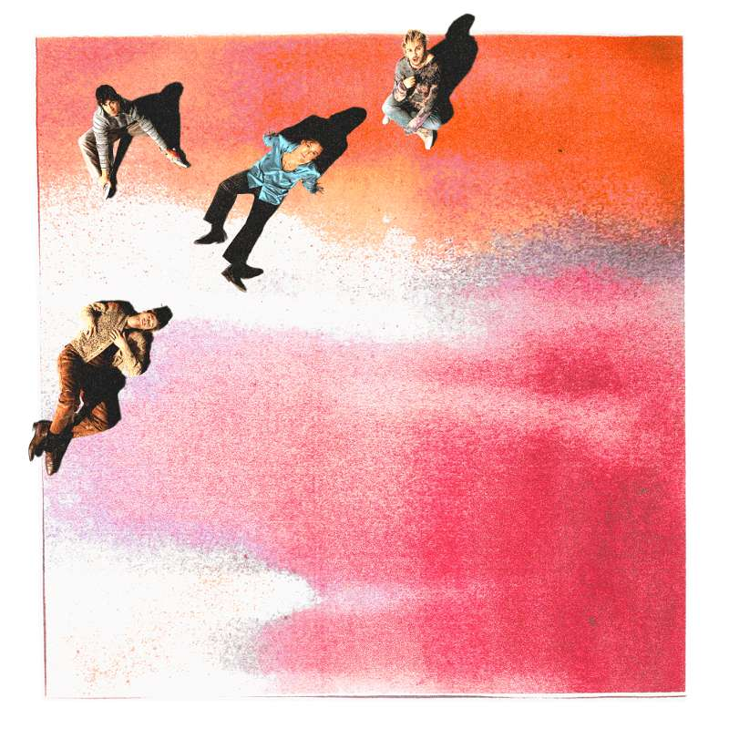

5SOS 5
Released September 2022
Musicians:
- Luke Hemmings, Lead Singer & Guitar
- Michael Clifford, Guitar & Vocals
- Calum Hood, Bass guitar & Vocals
5SOS5 is the fifth studio album by 5 Seconds of Summer, released on 23 September 2022 through BMG Rights Management. The band spent two years working on the album, beginning after the release of their fourth album “Calm” in 2020. Luke Hemmings called the lyrical content written for the album "extremely introspective". The band wrote and produced most of the album themselves, including the first two singles, "Complete Mess" and "Take My Hand".


Side One
- COMPLETE MESS
- Easy For You To Say
- Bad Omens
- Me Myself & I
- Take My Hand
- Carousel
Side Two
- Older
- Haze
- You Don´t Go To Parties
- Blender
- Caramel
- The album’s lead single, “COMPLETE MESS,” is the first track of the band written and produced only by the four members.
- For me, the whole album is the most introespective and the most lyrically beautiful [one that we’ve made so far]. There’s just so much heart in it - Luke Hemmings.
- Luke Hemmings, Lead Vocals
- The album sold 48,000 equivalent album units first week in the US, including 36,000 in pure album sales.